Explorando a série que conquistou o coração dos jovens ao redor do mundo
Origem e Produção
- Rebelde é uma telenovela mexicana produzida pela televisa e exibida originalmente pelo Las Estrellas.
- A telenovela "Rebelde" estreou no dia 4 de outubro de 2004.
- A trama é uma adaptação da novela argentina "Rebelde Way", criada por Cris Morena.
- A versão mexicana foi produzida por Pedro Damián e tornou-se um grande sucesso em diversos países, popularizando a banda RBD, formada pelos protagonistas da novela.
- "Rebelde" foi criada em 2004, num contexto de globalização e crescente influência da cultura pop, com a internet facilitando a disseminação de conteúdos. A valorização da cultura juvenil, a força da Televisa na produção de telenovelas e a popularidade de bandas juvenis ajudaram a novela a alcançar sucesso internacional.
A trama abordava temas relevantes para os jovens, e a banda RBD formada pelos protagonistas se tornou um fenômeno musical global.
Enredo
- "Rebelde" se passa no Elite Way School, um colégio interno para jovens da alta sociedade. A trama principal gira em torno de seis estudantes: Mía, Roberta, Miguel, Diego, Lupita e Giovanni, que formam a banda RBD. Eles enfrentam diversos desafios, incluindo problemas familiares, conflitos amorosos, rivalidades, e questões sociais. Ao longo da série, os personagens aprendem sobre amizade, lealdade e autoconhecimento, enquanto perseguem seus sonhos musicais e pessoais.
Por que Ficou Famoso?
"- 1. *Trama envolvente*: A história aborda temas universais como amor, amizade, conflitos familiares e sonhos adolescentes, o que gerou identificação com o público jovem.
- 2. *Personagens carismáticos*: Os personagens principais, interpretados por atores carismáticos, conquistaram rapidamente o coração dos espectadores.
- 3. *Banda RBD*: A formação da banda RBD dentro da trama e seu sucesso na vida real impulsionou a popularidade da novela. A banda lançou álbuns, fez turnês internacionais e se tornou um fenômeno musical.
- 4. *Marketing e merchandising*: A novela teve um forte apoio de marketing, com produtos licenciados como roupas, acessórios e materiais escolares, além de CDs e DVDs da banda RBD.
- 5. *Adaptação de sucesso*: Sendo uma adaptação da popular novela argentina "Rebelde Way", ela já tinha uma fórmula de sucesso comprovada, que foi adaptada ao contexto mexicano com grande eficácia.
Elenco
Protagonistas
Anahí como Mia
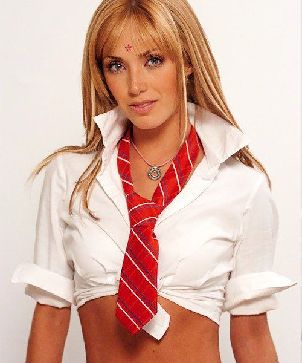
Dulce María como Roberta
Alfonso Herrera como Miguel
Christopher von Uckermann como Diego
Maite Perroni como Lupita
Christian Chávez como Giovanni
Elenco de Apoio
Inclui atores como Ninel Conde, Juan Ferrara, e outros talentos mexicanos.
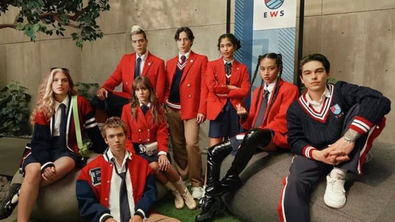
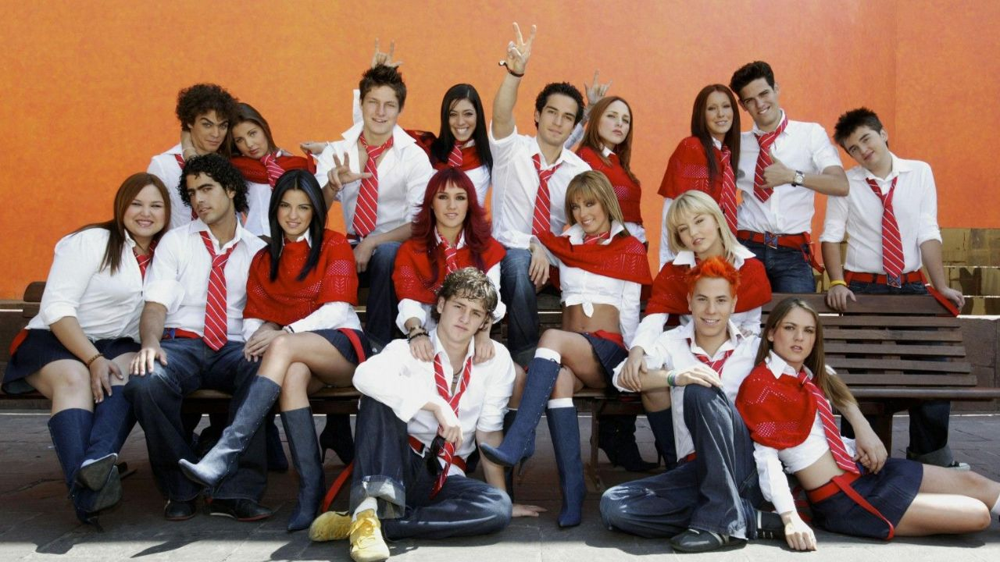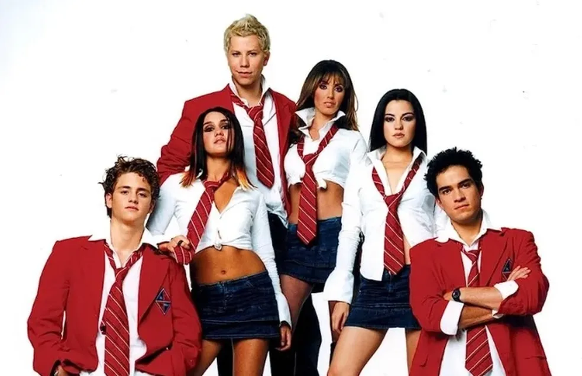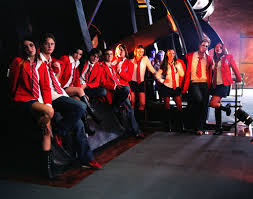
Impacto Social
- "Rebelde" impactou a sociedade ao abordar temas relevantes para jovens, como amor, amizade e conflitos familiares, promovendo identificação. A novela popularizou a banda RBD, influenciou a moda juvenil e trouxe discussões sobre bullying e diferenças socioeconômicas, tornando-se um fenômeno cultural dos anos 2000.
Curiosidades
Legado Musical: O elenco lançou vários álbuns que alcançaram sucesso internacional, com músicas que se tornaram hits.
Adaptações Internacionais: "Rebelde" inspirou adaptações em diversos países ao redor do mundo, ampliando seu impacto global.
.jpg) 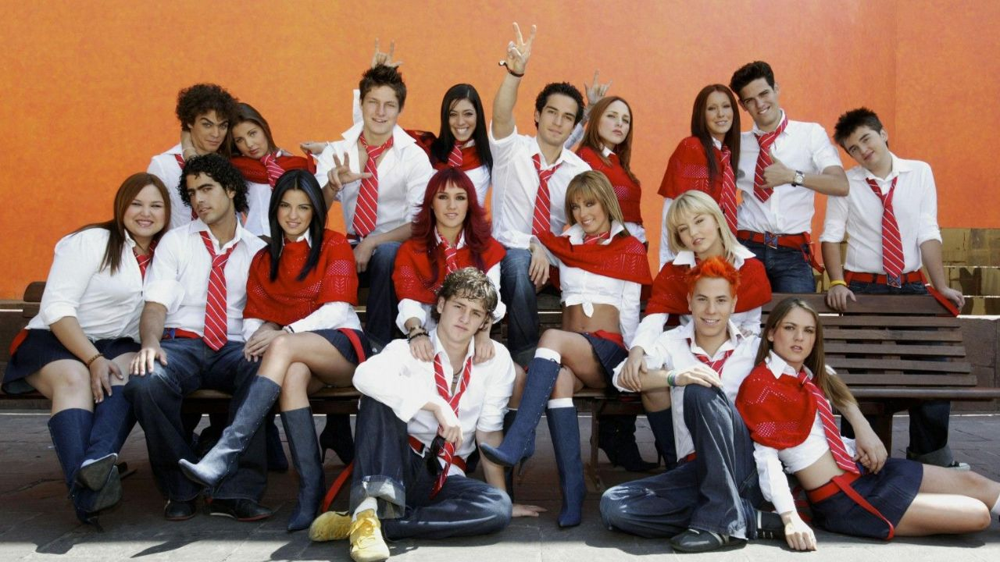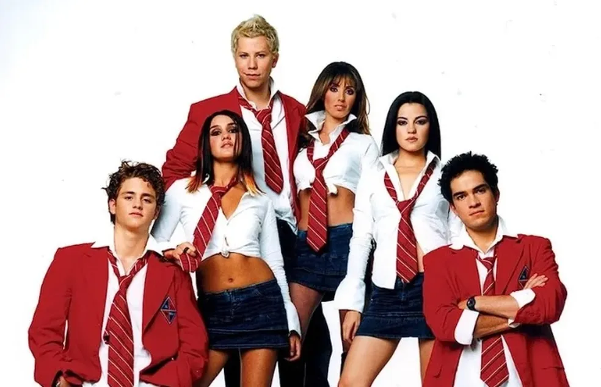
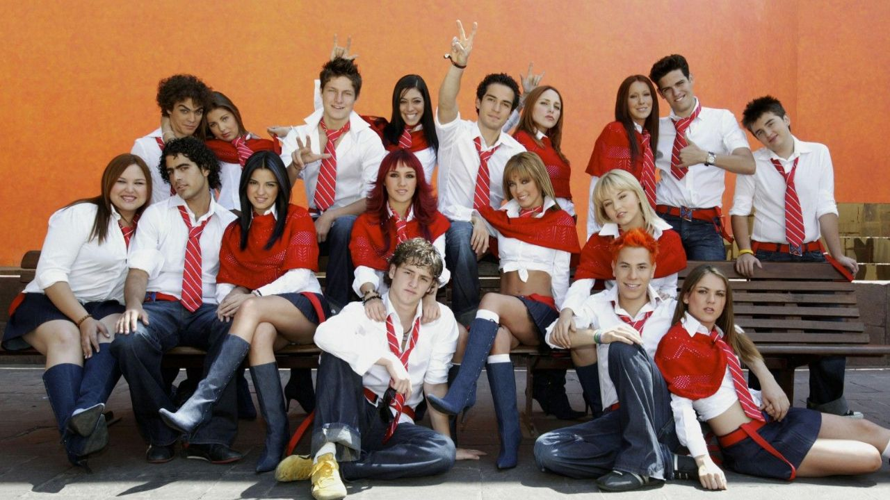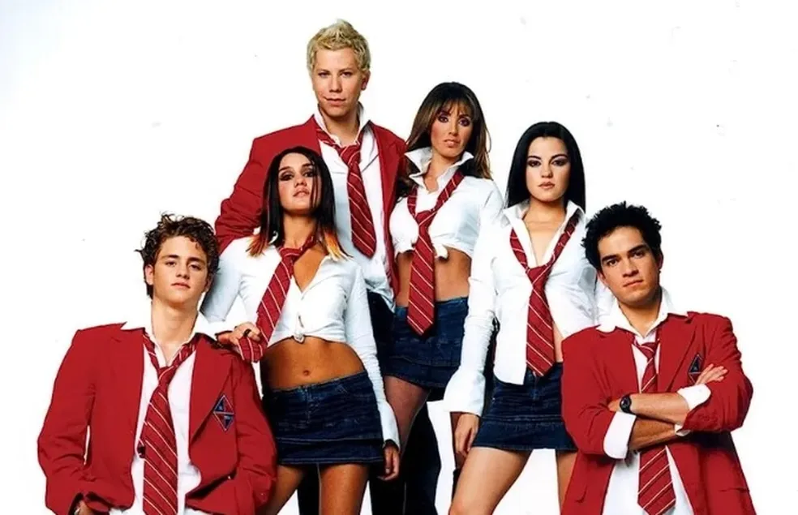 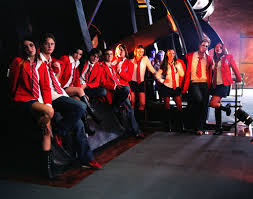
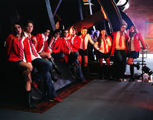